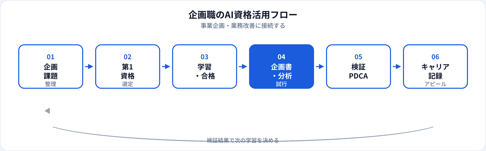

事業企画・商品企画・経営企画・DX推進など、企画職は「調べる・考える・まとめる」時間が長い職種です。生成AIは、市場整理のたたき台や企画書の骨子、業務フローの改善案づくりを加速できます。一方、根拠のない数字や誤った競合分析は企画の信頼を損ないます。本記事では、企画職が取るべきAI資格を比較し、事業企画・業務改善への接続、AI PM等へのキャリアまで2026年6月時点で整理します。営業職向け・非エンジニア向けの記事も併せて参照してください。
企画職にAI資格が効く理由
企画の成果物は「アイデアの良さ」だけでなく、根拠・論理・再現性で評価されます。資格学習は、生成AIを下書きエンジンとして使いつつ、最終判断は人間が行う——という型を身につける助けになります。
企画スピードの向上
骨子・論点整理・反論想定を速く作り、ディスカッションに時間を割ける。空いた時間を現場ヒアリングや検証に使う。
AI/DX企画の説得力
新規AI事業・社内DX案件では、ML/生成AIの基礎用語と限界を理解している企画者が、エンジニア・経営層との会話をリードしやすい。
業務改善の体系化
「なんとなくAIを入れる」から、課題→打ち手→効果測定の型で改善提案できる。資格はその共通言語になる。
試験対策はこちら
企画職のタイプと資格の効き方
| 企画の種類 | AI資格の主な役割 | 第1候補の目安 |
|---|---|---|
| 事業・経営企画 | 市場整理・シナリオ整理のたたき台、リスク説明 | 生成AIパスポート |
| 商品・サービス企画 | ペルソナ・機能案・競合比較の下書き | 生成AIパスポート → G検定（AI機能あり） |
| DX・業務改善企画 | As-Is/To-Be整理、業務フロー改善案 | 生成AIパスポート ＋ ITパスポート（任意） |
| 新規AI事業・AI PM志向 | PoC要件・成功指標・技術チームとの共通言語 | 生成AIパスポート → G検定 |
業務別：生成AIの活用シーン
| 業務 | 生成AIの使い方（例） | 資格で学ぶ関連知識 |
|---|---|---|
| 事業企画書 | 章立て案、論点リスト、反論と回答の下書き | プロンプト設計、出力検証、ハルシネーション |
| 市場・競合整理 | 公開情報の要約、比較軸の提案 | 情報源の確認、事実と推測の区別 |
| 業務改善（BPR） | 現行フローの文章化、ボトルネック仮説、改善案の列挙 | Human-in-the-Loop、業務への段階導入 |
| ブレスト・ワークショップ | アイデアの壁打ち、視点の追加（SCAMPER等） | アイデアの取捨選択は人間が行う |
| 社内稟議・予算申請 | 背景・目的・効果の文案、リスク記載のたたき台 | 数値・効果は根拠資料と突合 |
| AI機能の企画（PoC） | ユースケース案、評価指標の候補、非機能要件のチェックリスト | RAG・評価の基礎、倫理・バイアス（G検定も有効） |
AI PMの業務イメージはAIプロダクトマネージャーとは、プロンプト設計は学習ガイドで深掘りできます。
おすすめ資格の比較
| 資格 | 企画職との相性 | 学習時間目安 | 向いている企画 |
|---|---|---|---|
| 生成AIパスポート | ◎ 企画書・分析のたたき台に直結 | 20〜40時間 | 事業企画、商品企画、業務改善、社内DX |
| G検定 | ○ AI/DX・新規AI事業企画 | 80〜150時間 | AI機能付きプロダクト、PoC企画、AI PM志向 |
| ITパスポート | ○ システム企画・DXの土台 | 40〜80時間 | IT投資判断、ベンダー選定、プロジェクト企画 |
| DS検定（リテラシー） | △ データドリブン企画の入口 | 40〜80時間 | KPI設計、分析結果の読み方を示したい企画職 |
学習の進め方は営業職・企画職のAI資格（学習ガイド）、横断比較は3資格比較を参照。
第1候補と学習順
-
第1：生成AIパスポート
企画書・市場整理・業務改善のたたき台づくりにすぐ効く。合格後、進行中の企画案件1つに試験導入する。
-
第2（任意）：G検定
AIをコアとする企画、エンジニア・DSとの要件定義、AI PMを視野に入れる場合。
-
第2〜3（任意）：ITパスポート
大規模システム投資・ベンダー管理が多い企画で、IT基礎用語の整理が必要な場合。
| あなたの企画テーマ | 第1候補 |
|---|---|
| 社内業務のAI活用・効率化 | 生成AIパスポート |
| 新規AIサービスの事業企画 | 生成AIパスポート → G検定 |
| データ分析を軸にした企画 | 生成AIパスポート ＋ DS検定リテラシー（任意） |
| 大規模IT投資・ベンダー選定 | ITパスポート → 生成AIパスポート |
企画職の活用フロー

企画では仮説→たたき台→検証→修正のサイクルが重要です。AIはたたき台までを速くし、検証と意思決定は人間が担う——この分担をフローに組み込みます。
合格後の実践（企画書・分析・改善）
企画書テンプレート
「背景・課題・施策・KPI・リスク・次アクション」のプロンプトを固定。数値・事例は必ず出典付きで人が差し替え。
市場整理1枚サマリ
公開レポート・ニュースから論点を抽出し、1枚に要約。競合の強み弱みはファクトチェック後に確定。
業務改善のAs-Is/To-Be
現行フローを文章化→ボトルネック仮説→AI/非AIの改善案を列挙→パイロット範囲を決定。効果は小さく測定。
企画職の評価は採否・実行・効果に結びつきます。AIで短縮した時間を、ステークホルダー調整や検証に再投資することが、キャリア上も効果的です。
企画現場の注意点
| やってよいこと | 避けるべきこと |
|---|---|
| 公開情報に基づく論点・構成の下書き | 市場規模・法規をAIのみで確定 |
| 匿名化した社内事例でのプロンプト練習 | 未公開の財務・M&A・個人情報の入力 |
| 複数案の比較・反論リストの生成 | 経営会議資料を検証なしで提出 |
| PoCの評価指標候補のブレスト | 「AIだから精度100%」のような過信 |
生成AIパスポートは、ハルシネーションと情報管理を企画職が説明できるレベルまで整理するのに向いています。
キャリア・転職でのアピール
現職（企画のまま）
「生成AIパスポート（年月）」と、企画サイクル短縮「業務改善PoC 1件実行」などをセットで記載。社内のAI活用ガイドライン策定への参画もアピール材料になります。
転職・キャリアチェンジ
- AIプロダクトマネージャー 企画・調整力 ＋ 生成AIパスポート ＋ G検定（任意）＋ PoC企画実績
- DX推進・社内コンサル 業務改善企画 ＋ 生成AIパスポート ＋ パイロット成果
- 事業開発（AI/DX） 新規事業企画 ＋ G検定/生成AIパスポート ＋ 市場検証の記録
- プロンプトエンジニア（業務寄り） 社内業務のプロンプト設計 ＋ 生成AIパスポート（詳細）
資格の一般的な活かし方はAI資格はキャリアにどう役立つ？、履歴書は記載例ガイドを参照。
資格だけでは足りない点
企画職の評価は意思決定の質と実行力です。資格はリテラシーの証明になりますが、現場の課題理解、ステークホルダー調整、検証結果に基づくGo/No-Goは経験で培う領域です。合格後は、小さな企画でPDCAを1サイクル回すことを優先してください。
よくある質問
企画職におすすめのAI資格はどれ？
事業企画・業務改善が主なら生成AIパスポート。AIコアの新規事業・AI PM志向ならG検定も検討。
事業企画にG検定は必要？
必須ではありません。非AI中心の企画なら生成AIパスポートで十分なことが多いです。
生成AIで企画書を書くときの注意点は？
数値・法規・競合情報は一次情報で確認。未公開情報は入力しない。AI出力はたたき台と割り切る。
企画職からAI PMに転職できる？
可能です。仮説・調整・企画書の経験は強み。資格に加えPoC企画の実績があると説得力が増します。